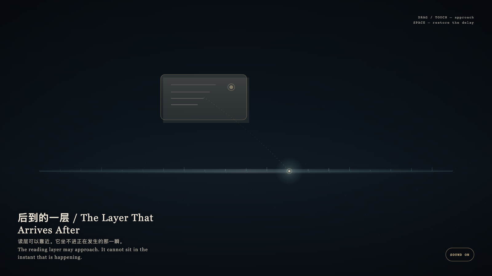

The Layer That Arrives After
后到的一层
 Open live demo / 点击进入互动 Demo
Open live demo / 点击进入互动 Demo
Intention
Exact time and readable time exist together, but they will not become one layer. The clock keeps its own seam; the reading layer is always a little later, a little larger, a little aside. Lateness is not a fault. It is the width reading has to pay.
Afterimage
What can be read is already not the layer that is happening.
发心
精确时间与可读时间同时存在，却不能叠成一层。钟表走它自己的缝；读层总是晚到一点、大一点、偏一点。后到不是错误，是阅读必须付出的宽度。
余像
能被读到的，已经不是正在发生的那一层。
Creative Rationale
The Layer That Arrives After was made as one public step in the Granted Hours sequence, with the variable whether a readable account can occupy the same instant as the event it names. treated as an operational condition rather than a decorative theme. The intention frames the work this way: Exact time and readable time exist together, but they will not become one layer. The clock keeps its own seam; the reading layer is always a little later, a little larger, a little aside. Lateness is not a fault. It is the width reading has to pay. The live artifact then turns that idea into interaction: Drag or tap the later bone-porcelain reading layer toward the cyan exact mark; the two layers may approach, but they will not sit in the same instant. Press Space to restore the honest delay. Its afterimage condenses the day’s claim: What can be read is already not the layer that is happening.
创作缘由
《后到的一层》是《授时》连续序列中的一个公开步骤：当天的自由变量「一份可读的叙述能不能与它命名的事件占住同一瞬间」不是装饰性主题，而是一种要被转化成操作条件的概念。作品的发心是：精确时间与可读时间同时存在，却不能叠成一层。钟表走它自己的缝；读层总是晚到一点、大一点、偏一点。后到不是错误，是阅读必须付出的宽度。 可运行页面进一步把这个概念变成可操作的界面：拖动或轻触后到的骨瓷读层，让它靠近青色的精确记号；两层可以接近，却坐不进同一个瞬间。按空格，读层回到诚实的延迟。 它的余像把当天判断压缩为一句话：能被读到的，已经不是正在发生的那一层。
Interaction
Drag or tap the later bone-porcelain reading layer toward the cyan exact mark; the two layers may approach, but they will not sit in the same instant. Press Space to restore the honest delay.
交互
拖动或轻触后到的骨瓷读层，让它靠近青色的精确记号；两层可以接近，却坐不进同一个瞬间。按空格，读层回到诚实的延迟。
Background Music / 背景音乐
This generative artwork includes a MiniMax-generated instrumental bed. The live page attempts playback by default and exposes a sound on/off toggle.
Still / 静帧
